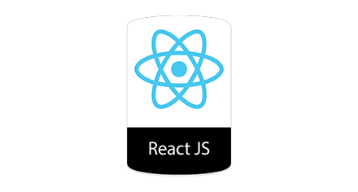
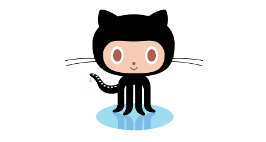
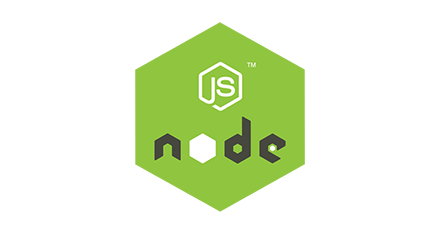

A może by tak zrobic strone
Będącą Twoją wizytówką

React.jsbiblioteka języka programowania JavaScript, która wykorzystywana jest do tworzenia interfejsów graficznych aplikacji internetowych. Została stworzona przez Jordana Walke, programistę Facebooka, a zainspirowana przez rozszerzenie języka PHP - XHP.
React.jsbiblioteka języka programowania JavaScript, która wykorzystywana jest do tworzenia interfejsów graficznych aplikacji internetowych. Została stworzona przez Jordana Walke, programistę Facebooka, a zainspirowana przez rozszerzenie języka PHP - XHP.

Github hostingowy serwis internetowy przeznaczony dla projektów programistycznych wykorzystujących system kontroli wersji Git. Stworzony został przy wykorzystaniu frameworka Ruby on Rails i języka Erlang. Serwis działa od kwietnia 2008 roku.
Github hostingowy serwis internetowy przeznaczony dla projektów programistycznych wykorzystujących system kontroli wersji Git. Stworzony został przy wykorzystaniu frameworka Ruby on Rails i języka Erlang. Serwis działa od kwietnia 2008 roku.

Node.js wieloplatformowe środowisko uruchomieniowe o otwartym kodzie do tworzenia aplikacji typu server-side napisanych w języku JavaScript. Przyczynił się do stworzenia paradygmatu:
Node.js wieloplatformowe środowisko uruchomieniowe o otwartym kodzie do tworzenia aplikacji typu server-side napisanych w języku JavaScript. Przyczynił się do stworzenia paradygmatu:
JavaScript everywhere
Skontaktuj się ze mną